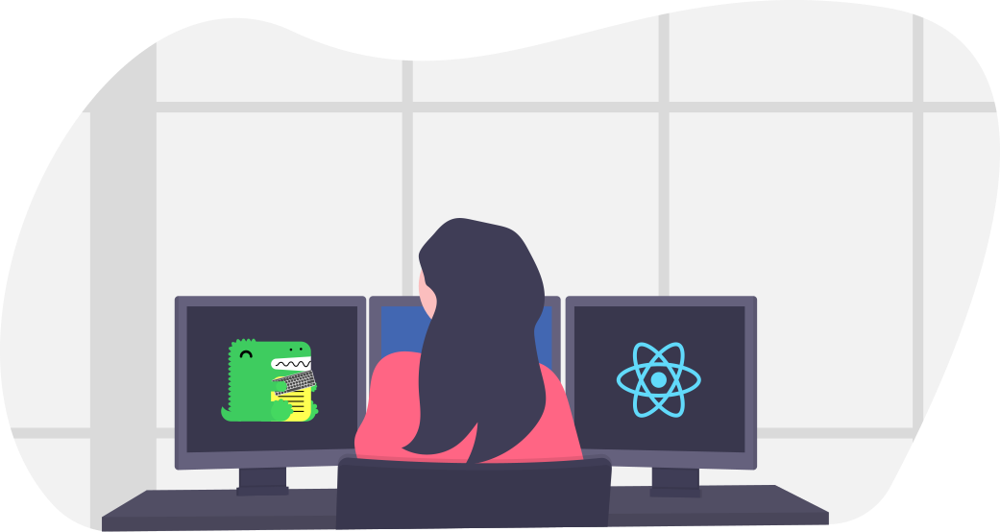

Baron Boilerplates
Starting point for applications

Setup to my personal liking
Everyone has their own prefered technology stack. These templates represent mine.

As consistent as possible
All templates have a certain level of consistency between them.

Modern technologies
I don't want to do things the old way! At least when there's a new way that's better.